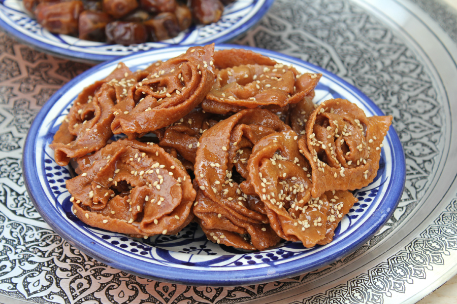

Chebakia
Chebakia is een traditioneel populair zoet honingkoekje Tijdens het verbreken van het vasten wordt dit naast de bekende Harira als bijgerecht opgediend.
- 130 g sesamzaad
- 150 g amandelen
- 80 g walnoten
- 10 g gist
- 3 g kaneelpoeder
- 8 g venkelzaad
- 8 g anijszaad
- 1 g arabische gom
- 16 g bakpoeder
- 1 zakje saffraan
- 2 eigeel
- 175 ml oranjebloesemwater
- 140 ml azijn
- 300 g boter
- 1000 g bloem
- 2000 g honing
- sesamzaad
Bereidingswijze
- Rooster de sesamzaadjes in een droge koekenpan op middelhoog vuur, wanneer het goudbruin kleurt is het klaar.
- Doe de sesamzaadjes, amandelen en walnoten in een hakmolen en maal dit fijn.
- Doe de gemalen nootjes in een diepe kom en voeg de gist, venkelzaad, anijszaad, kaneelpoeder, arabische gom, bakpoeder, saffraan, eigeel, oranjebloesemwater en azijn toe. Meng alles goed samen.
- Voeg de warme boter, water en bloem toe en kneed samen voor zo’n 5 minuten tot een geheel. Kneed dit niet te lang. Verdeel het in 12 stukken en maak er bollen van. Leg het op een bakvorm en dek het af. Laat het nu 20 minuten staan op een warme plek.
- Stort het bolletje deeg op een bloem bestoven werkplek en rol het heel dun uit. Hoe dunner het deeg hoe knapperig het wordt (ongeveer 1 tot 2 millimeter).
- Met een gekarteld deegwieltje snijd je een decoratieve patroon uit het deeg. Snijd het deeg in 9 stukken en haal er rechthoeken uit. Wil je grote chebakia maken, verdeel het deeg dan steeds door 9 rechthoeken. Wil je ze wat kleiner hebben, kun je het deeg door 12 delen.
- Snijd met een gekartelde deegwieltje de rechthoek niet helemaal door maar maak 5 diepe inkepingen tot een centimeter aan de rand, zo voorkom je dat het deeg uit elkaar valt. Nu heb je in totaal 7 stroken per rechthoek.
- Pak de rechthoek voorzichtig op en leg je vinger onder de tweede strook zodat dit naar boven steekt, de derde strook sla je over zodat je je vinger onder de vierde strook kan steken. Herhaal de werkwijze steeds opnieuw. Draai het om zodat het een mooie bloemvorm krijgt.
- Herhaal de bovenstaande stap met elk rechthoekige deeg dat je hebt gesneden. Dek het deeg vervolgens af tot het klaar is om te bakken.
- Verwarm de honing in een pan op laag vuur, het mag gaan schuimen maar niet pruttelen.
- Verhit de zonnebloemolie in een pan en bak de chebakia aan beide kanten mooi goudbruin, haal de chebakia eruit met een schuimspaan.
- Wanneer de chebakia net uit de hete olie komt, dompel het dan direct in de hete honing. Druk de chebakia voorzichtig naar beneden zodat het volledig wordt bedekt met honing, laat het staan voor een paar minuten. De chebakia zal nu de honing absorberen waardoor de chebakia een mooie (glanzende) kleur krijgt. Laat het daarna even uitlekken in een vergiet (vergeet niet om er een diepe bord/bak onder te leggen).
- Bestrooi de chebakia met sesamzaadjes.

TipLaat de chebakia eerst afkoelen en rusten voor een paar uur voordat je het afdekt.